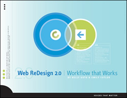
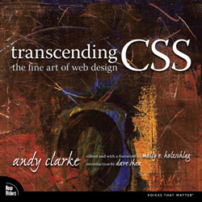

Almost every company, firm, and designer has their own process for creating websites. Let's delve into some of these processes.
"Web ReDesign 2.0 | Workflow that Works,"a book by Kelly Goto and Emily Colter, describes what they call the "Core Process."
This has five main steps:
- Define the project
- Develop site structure
- Design visual interface
- Build and integrate
- Launch and beyond
There are other processes that web designers use. In an wise-women.org interview on the website wise-women.org Kelly stated,
"Web Redesign 2.0: Workflow that Works is actually touted as a 'one process fits all.' However this might be misleading to some; even I don't believe you can have one methodology to fit all types of projects.
In Transcending CSS, Andy Clarke describes his "content-based process."
His process also has five steps:
- Gather the content
- Work with wireframes to organize and present that content
- Create static designs to demonstrate creative concepts and layout ideas
- Write meaningful markup that structures content
- Work with CSS to implement the design
Some things to keep in mind:
- Process is important
- Keep track of your
- process in a process book
A couple of important terms and definitions:
- Process
- A series of actions, changes, or functions bringing about a result Dictionary.com
- Workflow
- The flow or progress of work done by a company, industry, department, or person Dictionary.com